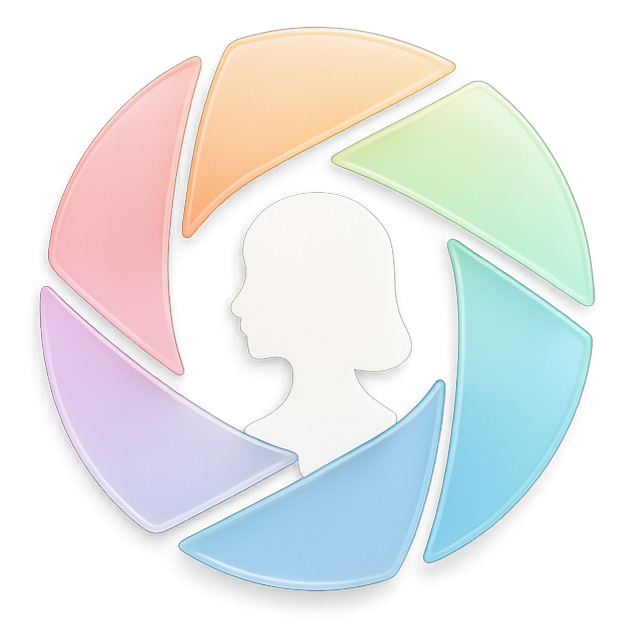

Skip to workspace
Interactive prototype
/
Fictional profile and illustrative market data
No live analysis or account data

AI Profile
Photo Maker
Career workspace
Your work
A clearer next move starts with evidence you can inspect.
Dark
Photos
Help
AI Profile Photo Maker
Ask agent
Prototype data · locally held